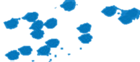
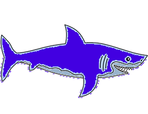

Chuyến khám phá 02 · Sinh vật biển
Mỗi loài, một nhịp bơi.
Cá mập lướt nhanh, rùa biển thong thả, đàn cá nối đuôi nhau. Quan sát những nhịp chuyển động khác nhau trong cùng một làn nước.
Ngắm cảnh biểnNHỊP SỐNG DƯỚI LÀN NƯỚC02 / 03




Cá mập nhanh hơn · Rùa chậm rãi · Đàn cá bơi ngangDƯỚI MẶT NƯỚC
Cảnh đang đứng yên theo cài đặt giảm chuyển động của thiết bị. Tắt “Giảm chuyển động” trong cài đặt thiết bị để xem hoạt ảnh.
Quan sát những nhịp bơi.
Cá mập hoàn thành hành trình nhanh gấp đôi rùa biển. Đàn cá vàng bơi ở tầng nước phía trên, còn đàn cá xanh mờ tạo chiều sâu phía xa. Mỗi nhân vật tự quay đầu ở hai bên cảnh.
Cá mậpRùa biểnĐàn cá vàng
| Nhân vật | Một vòng ngang | Nhịp chuyển động |
|---|---|---|
| Cá mập | 20 giây | Nhanh |
| Đàn cá vàng | 30 giây | Vừa |
| Rùa biển | 40 giây | Chậm |
| Đàn cá xa | 54 giây | Rất chậm |
Một vòng ngang = bơi từ mép trái sang phải rồi quay lại. Thời gian ở tốc độ 1×.